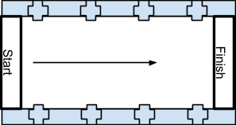
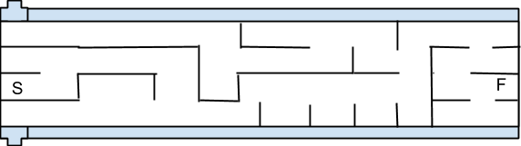

The 2014 Theme will be “Destination Mars!”
All rules are subject to change at the discretion of the iARoC organization.
The primary objective of this competition is to reward teams which demonstrate the capability of developing a single autonomous robot to perform in various challenges. Not only will the robot have challenges but the team members will also be evaluated.
Each team may use only 1 (one) robot for all challenges and it must autonomous. Changes or modifications to the robot during the competition, in between Challenges, are not allowed. No actuators, sensors, motors, wheels, etc. may be added or removed for individual challenges, in other words the configuration of the robot must be the same for all challenges. A picture of the robot and the team will be taken the day of the registration. Repairs and replacements can be made for damaged or broken parts of a robot as long as these parts do not change the configuration.
Appropriate team banners and posters are permitted and may be displayed in areas around the arena.
Each team will be assigned a work area with a table and chairs. Each work area will have a single plug for power. Additional plugs needed will be responsibility of each team. The tables are provided by the facility and the committee will not be able to accommodate additional tables. All trash will be responsibility of each team, there will be a trash cans provided within proximity of work areas. Please be responsible in your area.
During the competition, any issues not covered by these written rules, will be taken up by the Judging Committee. The issue and circumstances will be taken into consideration and a decision will be made in regard to the issue raised. This ruling will be final. It is iterated here that the competition is focused on the autonomous aspect of the robot and on how the team presented their robot. Issues pertaining to the environment some of which are covered elsewhere, but it accepted that these environmental issues affect all teams equally and should be taken into consideration by the team as part of their solution.
The Chief Judge is the final and absolute authority on the interpretation of all rules and decisions. Any contestant who wishes to challenge any ruling or scoring of an Arena Judge will bring it to the attention to the Chief Judge and must do so before they leave the arena area. The Chief Judge will then arbitrate the matter. Once the contestants have left the arena they may not appeal any decision or scoring of the Arena Judges.
It is not the intent of the competition to disqualify any team. It is the intent of the competition to have autonomous robots in a safe environment. If any of the following conditions are met then the team will be disqualified from the competition.
All rules are subject to change at the discretion of the iARoC organization.
This section will cover the challenges the robots the teams can participate in to earn points and be rewarded at the end of the competition.
Each team will pick the start time of each challenge, except the Mars Beacon Run. The sign up will be done at registration and in a linear fashion. Only the Team Captain and Team Mentor are required for this sign up. The team is responsible to show up at their selected start time. During the Earth to Mars Speed Challenge allowances will be made on the each run after the initial start time to accommodate the Mars Mission Briefing or the CAPCOM schedules. In other words, after your first run you may go to the Mars Mission Briefing or the CAPCOM and come back to run the second time in the Earth to Mars Speed Challenge.
Teams will be given time on the first day to make debug runs for the purpose of working out last minute bugs and handle any possible unexpected surprises. There will be a sign up sheet available during registration. Each slot will provide for 20 minutes of testing time. You can only sign up for one time slot.
Good sportsmanship has been demonstrated in past iARoCs and teams were very nice in sharing portions of the arena with other teams. The committee understands that this is a good use of everyone’s time and will continue this good behaviour. If a team needs a full run of the maze then the team NOT signed up for that time period must give way to the team which has signed up. In other words, share but be respectful to the team who has control of the maze for that time slot.
The robot challenge arena will be made of 7.62 centimeter diameter white PVC in 61 centimeter sections between joints. All measurements are approximate.
The surface of the arena will be commercial grade carpet of a tight weave and is not subject to change by the committee. The condition of the carpet can not be changed but the committee will try and address any areas of concern prior to the running of any challenge.
The lighting of the arena is florescence and with outdoor natural light. All efforts will be made to prevent direct sunlight in the arena. Indirect light from the outside will not be constrained due to the public nature of the event. The doors will not be blocked and people will be permitted in and out of the arena viewing area.
Every effort will be made by the Judges and Wranglers to insure the conditions of the arena do not affect the running of the robots. Some conditions may not be in control of the competition organizers such as heating, cooling, light, darkness, humidity and other environmental factors. Any requests must be made prior to the start of the Challenge for ALL teams.
Winners will be determined based upon the points earned in each challenge. Please see the section below the table for detailed description of each challenge. Each team will only get one score per challenge based upon the column.
Challenge | 1st Place | 2nd Place | 3rd Place | Completion | Participation | Time Limit |
Earth to Mars Speed Challenge | 500 | 400 | 300 | 200 | 100 | 1 run 5 minutes plus 5 minutes |
Mars Navigation Challenge* | 3000 | 2000 | 1000 | 450 | 100 | 20 minutes |
Mars Beacon Run | 400 | 300 | 200 | ----- | 100 | 20 minutes |
Mars Mission Briefing | 2000 | 1500 | 1000 | * | 500 | 15 minutes plus 5 minutes |
CAPCOM | ---- | ---- | ---- | ---- | 250 | 30 minutes |
Table 1: Points for each challenge. *See Scoring
Objective: Test the ability of the robot to travel at a high rate of speed in a straight line and maintain a minimum distance from the lane walls.
Overview: Teams will be paired and run through a double elimination format to allow for a random mixing of teams to compete against each other. Each team will have an opportunity for 3 speed runs to get their best time. A robot must cross the finish line to have its time recorded or it will be counted as no time. There will be no moving obstacles during this challenge.
The speed lane will have a start and a stop line. The width will be 3 cells, approximately 2 meters wide, and the robot will start behind the “starting line” and be centered between the lane walls. The centering of the robot behind the starting line is mandatory. The team member has to be ready for the signal to start the robot. The robot must start upon the signal. Unlike competitions in the past the PVC pipe joiners will be pointed inward to give a built in obstacle for wall huggers or wall skimmers. The joiners mandate approximately 10 centimeters distance from the lane wall. The drawing below is a sketch and not the actual dimensions of a lane.

Figure 1: Sketch of Earth to Mars Speed Challenge.
Scheduling: The teams will schedule their first race start time during registration at the beginning of the competition. Subsequent start times will be determined via the double elimination but every attempt will be made not to interfere with other challenges going on at the same time therefore subsequent races may be delayed or rearranged if there is a conflict.
Time Limits: The race itself is not time consuming but the transition between teams does take time. Initially 10 minutes will be allowed between the initial race schedulings. The Challenge Judge has the leeway to decrease this time to keep the challenge interesting and on track.
Scoring: Points are specified in Table 1. First, second and third place points will be awarded to the three teams with the minimum completion times. Completion points will be award to robots which make it across the finish line. Participation points will be awarded for robots that make it across the starting line. If a team is unable to make its initial selected time the challenge points will be forfeit.
Objective: Test the ability of the robot to solve a simple maze and transverse the maze along the solution path at least once within the time limits of the challenge.
Overview: The intent of this challenge is to have the robot solve for, and navigate, the one direct path to the end point. The maze will be static and standard. The robot can run the maze as many times as the team desires, within the time limits. Though it is not a rule, in general the first run to reach the end point would be the “mapping” run and the next run in which the robot takes no wrong turns would be the “solution” run. It is reinforced here that the intent of this challenge is for the robot and its on board systems be able to solve the maze problem and navigate the solution path. No remote control, no remote processing, and no manual map data entry is allowed during the Mars Navigation Challenge.
The Team Captain will inform the Lane Judge when the robot is ready to begin a mapping run. During the mapping run the robot may take any number of pathways to the final cell. The Lane Judge will monitor the robot along the mapping run to determine how the robot “learned” the maze. The robot must enter and cross the centerpoint of the final cell by more than 50% of the robot's body length. It is not required but recommended that the robot touch the final wall of the final cell to conclude the run. The Team Captain and the Lane Judge must communicate during this critical time as the robot may need human contact to tell it that the mapping run has been completed.
The Team Captain will inform the Lane Judge when the robot is ready to begin a solution run. During the solution run the Lane Judge will mark the number of wrong turns made by the robot. A wrong turn is defined as where the robot enters a cell off the one solution path by more than 50% of its body length. If a robot goes down a wrong path each new cell along the wrong path is counted as a wrong turn. When the robot completes the solution run the robot must indicate success in some way, such as stopping on its own accord; but a robot victory dance is also okay. Once again, the robot must enter and cross the centerpoint of the final cell by more than 50% of the robot's body length. It is not required but recommended that the robot touch the final wall of the final cell to conclude the run. When the robot indicates that the robot has completed the solution run the Lane Judge will tally the number of wrong turns.
The Team Captain must inform the Lane Judge to abort a solution run, or a mapping run, in order to start the run again.
The approximate dimensions of the maze lane will be 3 meter by 8 meter. The starting line will be at one end of the maze and the finish line will be at the other end with an infrared beacon. The beacon will be attached to a wall of the maze with a mechanical switch that must be activated to successfully finish the task, a Lane Judge will be on hand in case the switch does not work. The beacon will not be visible from the starting line, as the walls of the maze may obscure the beacon until such point as the robot reaches the correct corridor. There will be no moving obstacles during this challenge.

Figure 2: Sketch of Mars Navigation Challenge.
Scheduling: The teams will schedule their start time during registration at the beginning of the competition. A team may finish early but the start time for the next team will NOT be adjusted.
Time Limits: The maximum time is specified in Table 1. The robot may continue beyond the time limit if ALL of the following conditions are met:
Scoring: Points are specified in Table 1 with the following clarifications. Participation points will be awarded for robots that make it out of the starting cell. Completion points will be award to robots which make it to the final cell, i.e. the mapping run. Any number of teams will be awarded the points if the robot navigates the one path of the maze solution, the solution run. If a team is unable to make its selected time the challenge points will be forfeit. The human programming of the maze solution (coordinates obtained from a human solution) will disqualify the team from the Mars Navigation Challenge.
During the solution run If there were no wrong turns the team will receive the First Place score. If one wrong turn is made the team will receive the Second Place score and if 2 wrong turns are made the team will receive the Third Place score.
Objective: Test the ability of the robot to home in on an infrared beacon in open space with static obstacles and with other moving robots.
Overview: The open desert of Mars is strewn with rocks and other obstacles. In this challenge the robot will need to travel through an open arena in order to reach one of 3 infrared beacons. The approximate dimensions of the arena are 8m x 8m. The starting line will be at one end, and the beacons will be located towards the other side but not on the outside wall. This challenge will involve moving obstacles in the form of fellow robot entries. Unlike the Mars Navigation Challenge, where each robot is running solo, in this challenge there will be other robots attempting to achieve the same goal. The robot will be required to work on avoiding the obstacles, rocks and other moving robots, in order to reach a beacon. The beacons, along with the bump switch, will be facing the starting lineup but will also be supported by a freestanding framework. This framework will allow front access to the bump switch. The infrared beacon is a standard Roomba Home Base.
Scheduling: This Challenge starts at the same time for all robots but the the start position will be selected by the Team Captain. The selection order will be the reverse of the current standings for all teams.
Time Limits: The maximum time is specified in Table 1.
Scoring: The first robot to tap a beacon will receive the 1st place points as specified in Table 1. The next robot to tap the second beacon will receive the 2nd place points as specified in Table 1. And the next robot to tap the third beacon will receive the 3rd place points as specified in Table 1. Team participation points will be awarded to teams that start the Challenge. If a team is unable to make its selected time the challenge points will be forfeit.
Objective: Communicate the hardware and software design of the robot, specifically exploring the software solutions to the 3 robot challenges.
Overview: During the first day of the competition, each team will make a presentation to a panel of judges.
The presentations should include:
For the presentation the team may use:
The team is responsible for all rhetorical instruments, however a table and a projector with a VGA connector is provided.
The judges are expecting a technical presentation by the entire team explaining the details of the software and hardware engineering of the team’s particular robot, and will specifically be looking for how sophisticated or intelligent the robot is, and why it could be the most capable machine in each of the elements of the competition.
Scheduling: The teams will schedule their presentation start time during registration at the beginning of the competition.
Time Limits: The time limits are specified in Table 1. When the time limit is reached during the judge’s questions the team must make way for the next team immediately.
Scoring: Points are specified in Table 1. The panel of judges will grade each team
and award points based upon their grade. The minimum points for a grade is 500 and the maximum is 999. The top 3 teams will be awarded points for 1st, 2nd and 3rd place as specified in Table 1. Each team will only get one score. If a team is unable to make its selected time the challenge points will be forfeit.
Objective: Communicate to the general public about the robot competition and specifically about the team’s robot.
Overview: During both days of the competition, teams will have the opportunity to showcase their robot to the general public. The team will need to spend their time demonstrating and talking to the public to receive points for the showcase. These informal presentations will be conducted at tables located near the doorway to the Science Center. The team’s robot is required to participate. In addition the team may elect to use poster board or a laptop slideshow to assist in their presentation. Teams must let a CAPCOM Judge know that the team has made their robot available for viewing and procure a CAPCOM Judge's signature. The quality of the presentation will not be graded. Teams can make a second presentation and receive additional points.
Scheduling: The teams will schedule their presentation start time during registration at the beginning of the competition. The scheduling of the second presentation will be done after all teams have been scheduled.
Time Limits: The maximum time is specified in Table 1. Each team has a grace period of 5 minutes during team transitions.
Scoring: Points are specified in Table 1. Points will be awarded to the team for participating at the CAPCOM as described above. If a team is unable to make its selected time the challenge points will be forfeit.
All rules are subject to change at the discretion of the iARoC organization.
All robots are welcomed to participate in the Challenges of the iARoc! The majority of robots entered have been iRobot Roomba class robots which meet all the rules of the hardware and allow for a “brain” to co-exist on the robot which allows it to meet the autonomous requirements. Other types of robots have been entered such as the MindStorm and home builts.
Once turned on, the robot must be autonomous, self-controlled, battery operated and self-contained without any human intervention or remote computer. That is, the robots are to be controlled by an on board computing device and not manually controlled devices. The robot cannot leave anything behind as it travels through the arena. It cannot make any marks on the floor of the arena that aid in navigation as it travels.
The robot must be able to fit within a 60 centimeter square grid cell, which is the approximate size of the cell on the maze. The height of the robot is not to exceed 30 centimeter. If the robot has feelers to sense objects, the feelers will be counted as part of the robot’s total dimensions. Teams may add flags, hats or other purely decorative, non-functional items to the robot as long as these items do not exceed the total dimensions.
There are no restrictions on the weight of the robot.
There are no restrictions on the types of materials used in the construction of the robot.
There is no restriction on the type of sensors that can be used as long as they do not violate any of the other rules or regulations. Robots that use laser-based devices must take measures to prevent eye damage to team members and to observers. Teams are not allowed to place any markers, beacons or reflectors on the walls or floors to aid in the robot’s navigation..
Any program necessary must be downloaded to the robot before it is put into an arena when performing an actual task.
The maximum electrical requirements for any system needing power prior to starting a Challenge at the arena will be 10 amps at 120 VAC, 60 Hz. Power can be used to power computers being used to work on robot, as well as other requirements such as charging batteries.
No fixed cables are allowed to be connected to the robots during any Challenge.
No wireless communication TO the robot is allowed during any Challenge. Telemetry FROM the robot is allowed.
The judges may stop any robot at any time if they feel that it is performing, or is about to perform, any action that is dangerous or hazardous to people or equipment. No robot is allowed to use any flammable, combustible, explosive or potentially dangerous processes. Robots can not use projectiles or launch or throw any material even if tethered.